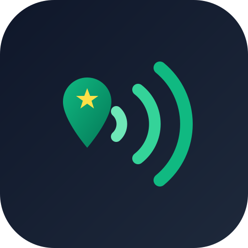

Radio de cobertura
Giros objetivo
Selecciona los giros para optimizar tus consultas.
🎯
Comienza a prospectar
Toca "Buscar cerca de mí" para encontrar los comercios que más necesitan reseñas en Google.

Selecciona los giros para optimizar tus consultas.
🎯
Comienza a prospectar
Toca "Buscar cerca de mí" para encontrar los comercios que más necesitan reseñas en Google.
🗺️
Mapa interactivo
Los marcadores de los negocios se mostrarán aquí una vez realizada la búsqueda. Puedes navegar directamente desde la lista de prospectos.
Paradas ordenadas automáticamente por cercanía para minimizar traslados.